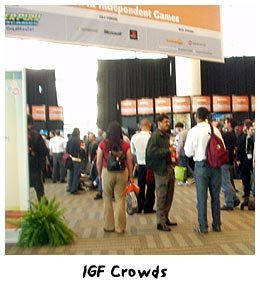

|
Postcard from San Francisco: GDC & Innovationby Shannon Appelcline Last month I attended GDC '05--that's the Game Developer's Conference. It's a convention that I've attended on and off since I joined Skotos. It's not my favorite of conventions, for reasons that I'll describe momentarily, but this year it was in San Francisco, just a BART trip across the Bay, and I figured that I could get a press pass due to my writings here and at RPGnet, so there was little excuse not to go. I had my game design journal with me, and over lunch I took a bit of time to write some of my impressions of this year's show. This is an excerpt: When I go away from GDC for a couple years, I manage to forget what an entirely singled-minded conference it is. I just did a first walk through of the expo hall, and it was graphics, graphics, broken up by an audio kit, then more graphics. That's long been my problem with GDC, or at least a clear statement of why the conference isn't oriented toward me. Instead, it's oriented toward a very specific subset of developer, who's doing development of a very specific type of animated graphical game, churning out yet another copy of yet another copy of the same game that's been on the market for the last ten years. This year I was really looking for things that were different at GDC, and I did manage to find some. There were a total of three booths selling AI middleware for games. There were some folks selling security middleware too. These definitely expanded the style-over-substance, graphics-over-gameplay that seems to be the hallmark of GDC. However, they weren't what I'd called innovative. AI has been a known issue in game fields for decades. I took a class about AI, centering on game AI, at UC Berkeley 13 years ago--and if a design concept has actually made it into the hallowed halls of academia, then it's very, very old indeed. Likewise security has correctly concerned us on the Internet for close to a decade; in fact, I worked at a security firm, Certicom Corp, shortly before I came to work for Skotos. So, there was stuff that was new to GDC (or at least that had been highlighted less at previous shows), but nothing that was actually new in and of itself. Beyond that, the best that the GDC expo floor could do for the cause of innovation was new bongo drums, so that you could played Donkey Kong #27 with a different type of controller. Cool. Now GDC (or at least the expo floor) really brings out the worst in computer game development. It shows off the flaws of a capitalistic conference design in stark contrast. The big money is in graphics, and to a lesser extent sound, so that's what's highlighted. Further, it's not a consumer show, and so you only see mass-produced middleware, not the occasional, freakish, actually innovative design that might result from them. However, though GDC might highlight issues of repetition in the gaming field, these problems do exist beyond the conference itself. Our field is built upon capitalistic forces that encourage us to produce the newest sequel of a sequel, with the skins and graphics changed, but not the actual game play (see an opponent; shoot him). I was pleased when I learned that Greg Costikyan had delivered exactly this rant, at GDC, and has since reproduced it on his blog. Here's a snippet: Games GROW through innovation. Innovation creates new game styles. Innovation grows the audience. Innovation extends the palette of the possible in games. The story of the last twenty years hasn’t been, as you’ve been sold, the story of increasing processing power and increasing graphics; it’s been the story of a startling burst of creativity and innovation. That’s what created this industry. And that’s why we love games. Greg writes both more elegantly and more radically than I on this subject. I think some innovative games are getting published and will continue to get published, just as we see an occasional Lost or Arrested Development on television: a show that breaks the common rules of the genre. However, I'd also agree that the majority of games being produced are non-innovative, non-interesting, mass-produced schlock, plain and simple. But I also saw something different at GDC, the IGF (Independent Games Festival) nominees. These are all small-team, small-budget games. Honestly I don't think that any of them have the resources to ever be the next big hit, but they do point toward continued innovation in the industry--beyond the occasional and accidental big-company breakout. I picked up a review copy of War!: Age of Imperialism. It's an adaptation and expansion of a board game by Eagle Games. For the most part it's not that innovative, except for the fact that it was one of the few games that really looked toward the board game industry for lessons learned, and after a hundred booths of 3D graphical engines that alone was a breath of fresh air. Star Chamber was more innovative, but in the same vein. It's a sort of online collectible card game, but it uniquely takes advantage of its computer interface to set the game on a real board--something a physical CCG would never do, because you can't fit a board in a box of cards. Dyadin, a student entry, was one of the wackiest games I saw. It's a two-player game, where each player sees a different view of the same world and where each player has attributes that are based on his distance from the other player in the gameworld. They're somewhat artificial mechanics, but at the same time largely original and the sorts of things that could probably be used anywhere in the game industry, just by asking the question, "How might different players see this differently?", or "How could distance between players affect in-game attributes?" So, looking at GDC I can see a couple of different worlds of gaming. There was the corporate-minded world of the expo, with more and more identical middleware packages, together designed to churn out the same "big hits" again and again. But there was also the IGF, tucked up on one of the mezanines, showcasing games of all sorts that aren't the norm for the commercial gaming industry. Likewise, as a designer, you can choose which world of gaming to enter. You can be a starving, independent designer, putting out innovative games that not too many people will see while living on Ramen noodles. Or, you can be a corporate drone, chunking out identical code for identical games during eternal 80-hour crunch weeks, but at the same time building up nice balances in your bank accounts and working in the industry you always wanted to be a part of. Or, you can be the sheep in wolf's clothing, the innovator trying to work from within the big gaming houses, but constantly beset by disappointment when corporate refuses your newest good ideas. There's no good answer, there's no bad answer, there's just what makes you happy. What type of game designer do you want to be? [ <— #165: A Theory of Game: Psychology & The Prisoner's Dilemma | #167: It's All in Your Point of View —> ] Miniseries ...
|